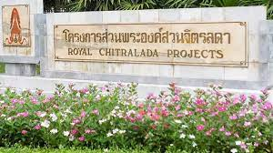

โครงการส่วนพระองค์สวนจิตรลดา
พระบาทสมเด็จพระเจ้าอยู่หัวภูมิพลอดุลยเดชได้พระราชทานทรัพย์ส่วนพระองค์สร้างโครงการอันหลากหลายในโครงการส่วนพระองค์สวนจิตรลดา เพื่อเป็นโรงงานตัวอย่างและพระราชทานโอกาสให้บุคคลกลุ่มต่าง ๆ ที่สนใจ "ดูกิจการได้ทุกเมื่อ" ในแต่ละปีจึงมีผู้เข้ามาศึกษาดูงานโครงการต่าง ๆ เกือบ ๒๐,๐๐๐ คนต่อปี ลักษณะของโครงการส่วนพระองค์สวนจิตรลดา แบ่งออกเป็น ๒ ประเภทคือ ๑. โครงการแบบไม่ใช่ธุรกิจ เป็นโครงการสนองแนวพระราชดำริของพระบาทสมเด็จพระเจ้าอยู่หัว เกี่ยวกับการพัฒนาประสิทธิภาพการผลิตทางการเกษตร ทรงให้ความสำคัญกับการเพิ่มพูนคุณภาพชีวิตของเกษตรกร โดยมีแนวทางที่สำคัญคือ ทำให้เกษตรกรสามารถพึ่งตนเองได้ทางด้านอาหาร และสนับสนุนให้มีรายได้เพิ่มขึ้นนอกเหนือไปจากภาคเกษตร อีกทั้งเน้นการพัฒนาและอนุรักษ์ทรัพยากรธรรมชาติ โครงการเหล่านี้ได้แก่ โครงการเกี่ยวกับปลานิล ป่าไม้สาธิต นาข้าวทดลองข้าวไร่ การผลิตแก๊สชีวภาพ ปุ๋ยอินทรีย์ เพาะเลี้ยงเนื้อเยื่อพืช สวนพืชสมุนไพร สาหร่ายเกลียวทองโครงการทดลองปลูกพืชโดยปราศจากดิน ๒. โครงการกึ่งธุรกิจเป็นโครงการทดลองแปรรูปผลิตภัณฑ์จากการเกษตร มีการจัดผลิตภัณฑ์ออกจำหน่ายในราคาย่อมเยาในรูปแบบที่ไม่หวังผลกำไร แต่มุ่งส่งเสริมให้ประชาชนบริโภคสินค้าที่ผลิตได้ในประเทศไทย ซึ่งมีคุณภาพและราคาไม่แพง โครงการต่าง ๆ เหล่านี้ได้แก่ โรงโคนมสวนจิตรลดา โรงบดและอัดแกลบ ห้องปฏิบัติการทดลอง โรงผลิตน้ำผลไม้ โรงนมเม็ดสวนดุสิต โรงอบผลไม้ โรงกลั่นแอลกอฮอล์ โรงเนยแข็ง โรงสีข้าว โรงเห็ด โรงอาหารปลา โรงผลิตกระดาษสา และโรงหล่อเทียนหลวง